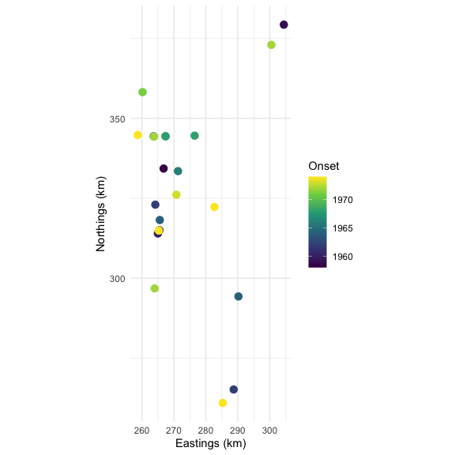

This article checks knox_test() against a published
example: the 22 patients with Kaposi’s sarcoma in the West Nile district
of Uganda (1958-1974) of chapter 7 of Tango (2010), Statistical
Methods for Disease Clustering. Tango applies the Knox test with
five space limits (1 to 5 km) and five time limits (0 to 4 years) and
gives, for each pair of limits, the number of pairs close in space and
time, its expected value and the Poisson mid-p-value (his Table
7.7).
1. The data
kaposi_uganda has the grid coordinates of the homes (km)
and the year of onset (Tango 2010, Table 7.1):
head(kaposi_uganda)
#> case x y onset
#> 1 1 266.8 334.3 1958
#> 2 2 304.4 379.3 1959
#> 3 3 265.5 315.0 1960
#> 4 4 265.0 314.0 1960
#> 5 5 264.2 323.0 1962
#> 6 6 288.7 265.2 1962
ggplot(kaposi_uganda, aes(x, y, colour = onset)) +
geom_point(size = 3) +
scale_colour_viridis_c(name = "Onset") +
coord_equal() +
labs(x = "Eastings (km)", y = "Northings (km)") +
theme_minimal()
Homes of the 22 patients, coloured by year of onset.
2. One Knox test
The coordinates are already planar (km), so
planar_coord = TRUE and ds is in km; the onset
is the year, so dt = 0 means “the same year”. With
crs = NULL the function does not build the map of the
links.
k <- knox_test(x = kaposi_uganda, crs = NULL, ds = 2, dt = 0, sym = 9999,
sp_link = FALSE, planar_coord = TRUE)
k$knox
#> $knox
#> [1] 2
#>
#> $p_value
#> [1] 0.0281
#>
#> $RR
#> [1] 6.218284
#>
#> $expected
#> [1] 0.3246753
#>
#> $RR_expected
#> [1] 6.16
#>
#> $p_poisson
#> [1] 0.02352772
#>
#> $pairs
#> [1] 231
#>
#> $pairs_space
#> [1] 5
#>
#> $pairs_time
#> [1] 15Of the 231 pairs of patients, 5 live within 2 km of each other and 15
had their onset in the same year; 2 pairs are close in both. If space
and time were independent, 5 * 15 / 231 = 0.325 pairs would
be expected. The function gives the two p-values: the Poisson
mid-p-value used by Tango and the Monte Carlo p-value (9,999
permutations of the years among the patients).
3. Table 7.7 of Tango
The 25 tests:
grid <- expand.grid(ds = 1:5, dt = 0:4)
tests <- lapply(seq_len(nrow(grid)), function(i) {
knox_test(x = kaposi_uganda, crs = NULL, ds = grid$ds[i], dt = grid$dt[i],
sym = 9999, sp_link = FALSE, planar_coord = TRUE)$knox
})
grid$pairs <- sapply(tests, `[[`, "knox")
grid$expected <- sapply(tests, `[[`, "expected")
grid$p_poisson <- sapply(tests, `[[`, "p_poisson")
grid$p_value <- sapply(tests, `[[`, "p_value")
as_table <- function(v, digits) {
m <- matrix(round(grid[[v]], digits), nrow = 5,
dimnames = list(paste0("<= ", 1:5, " km"),
c("0", paste0("<= ", 1:4))))
knitr::kable(m)
}Pairs close in space and time (rows: space limit; columns: time limit in years):
| 0 | <= 1 | <= 2 | <= 3 | <= 4 | |
|---|---|---|---|---|---|
| <= 1 km | 1 | 1 | 1 | 1 | 1 |
| <= 2 km | 2 | 2 | 2 | 2 | 2 |
| <= 3 km | 2 | 2 | 2 | 2 | 2 |
| <= 4 km | 2 | 2 | 2 | 4 | 7 |
| <= 5 km | 2 | 2 | 2 | 4 | 8 |
Expected pairs:
| 0 | <= 1 | <= 2 | <= 3 | <= 4 | |
|---|---|---|---|---|---|
| <= 1 km | 0.260 | 0.537 | 1.022 | 1.264 | 1.662 |
| <= 2 km | 0.325 | 0.671 | 1.277 | 1.580 | 2.078 |
| <= 3 km | 0.325 | 0.671 | 1.277 | 1.580 | 2.078 |
| <= 4 km | 0.714 | 1.476 | 2.810 | 3.476 | 4.571 |
| <= 5 km | 0.844 | 1.745 | 3.320 | 4.108 | 5.403 |
Poisson mid-p-value:
| 0 | <= 1 | <= 2 | <= 3 | <= 4 | |
|---|---|---|---|---|---|
| <= 1 km | 0.129 | 0.258 | 0.456 | 0.539 | 0.653 |
| <= 2 km | 0.024 | 0.088 | 0.251 | 0.340 | 0.480 |
| <= 3 km | 0.024 | 0.088 | 0.251 | 0.340 | 0.480 |
| <= 4 km | 0.098 | 0.310 | 0.652 | 0.364 | 0.135 |
| <= 5 km | 0.131 | 0.388 | 0.744 | 0.490 | 0.138 |
Monte Carlo p-value (9,999 permutations):
| 0 | <= 1 | <= 2 | <= 3 | <= 4 | |
|---|---|---|---|---|---|
| <= 1 km | 0.233 | 0.440 | 0.694 | 0.783 | 0.886 |
| <= 2 km | 0.028 | 0.122 | 0.344 | 0.477 | 0.681 |
| <= 3 km | 0.028 | 0.122 | 0.344 | 0.477 | 0.681 |
| <= 4 km | 0.133 | 0.436 | 0.847 | 0.455 | 0.115 |
| <= 5 km | 0.180 | 0.545 | 0.922 | 0.624 | 0.118 |
4. Comparison with Tango
-
Pairs and expected values: the 25 cells are
identical to Table 7.7 (2.810 and 2.809 differ only in the rounding).
Note that, although the text of Tango defines “close” with
<, his table uses<=(the pairs close in time are 15, 31, 59, 73 and 96 for 0,<= 1, …,<= 4years), asknox_test()does. - Poisson mid-p-value: 22 of the 25 cells agree to the third decimal. In the row of 1 km, Table 7.7 repeats for 2, 3 and 4 years the values of the row of 2 km (0.251, 0.259, 0.645); with 1 pair and the expected values of his own table (1.022, 1.264, 1.662), the mid-p-values are 0.456, 0.539 and 0.653. In the cell 5 km and 0 years the book gives 0.138 and the expected value 0.844 gives 0.131.
- Monte Carlo vs Poisson: the Monte Carlo p-values are larger than the mid-p-values (for 2 km and the same year, 0.028 vs 0.024). The Poisson approximation treats the pairs as independent, which they are not, and can be misleading (Barton and David 1966); the Monte Carlo p-value is the reference, above all with many cases, as in dengue.
The smallest p-value is that of 2-3 km and the same year (2 pairs, 0.325 expected, mid-p = 0.024): the patients could be clustered in space and time, but after the 25 tests the evidence is weak; the Max test of Baker (1996), which adjusts for the multiple limits, gives p = 0.106 (Tango 2010).
The unit tests of the package
(tests/testthat/test-knox.R) check these numbers every time
the package is built.
References
- Knox EG (1964). The detection of space-time interactions. Journal of the Royal Statistical Society, Series C, 13(1), 25-30.
- Tango T (2010). Statistical Methods for Disease Clustering. Springer. Chapter 7; the data of McHardy et al. (1984) and the results of Barton and David (1966) and Baker (1996) are cited from this book.